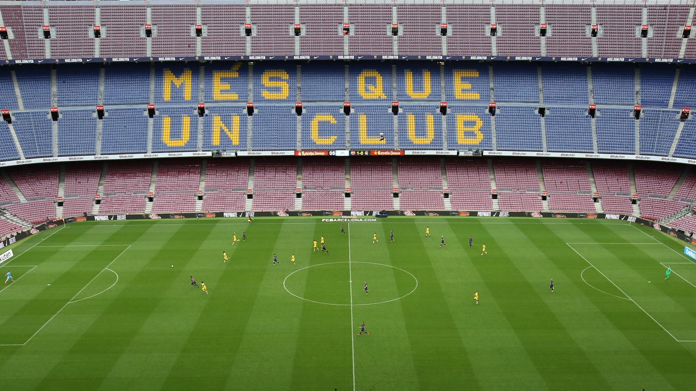
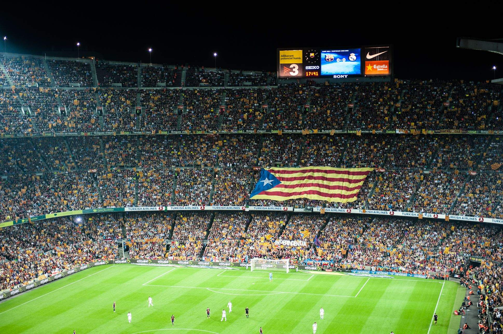

Camp Nou during the behind-closed-doors match (Image: El Español)

Clashes and voting scenes on the streets of Catalonia during the match (Image: La Directa)
By: Albert Ponferrada Sicart, Spring 2025 Final Blog Post
On October 1, 2017, FC Barcelona played a match in an eerily silent Camp Nou. The stands were empty-not due to apathy, but in protest. Outside the stadium, Catalans were voting in a referendum on independence, a vote the Spanish government had declared illegal. La Liga refused the club’s request to postpone the game, so Barça chose passive resistance: they played without fans.
Barça fans at Camp Nou holding estelades during a pro-independence rally (Image: El Nacional)
This was not the first time Barça blurred the line between football and politics. Since the 1970s, the club has served as a figurehead for Catalan nationalism. As the region emerged from Francoist repression, Camp Nou became a safe space to express banned identities. From flags to chants to silence, this is the story of how a football club came to symbolize the fight for self-determination.
Under Francisco Franco’s dictatorship (1939-1975), Catalan identity was forcibly suppressed. The Catalan language, national symbols, and political organizations were outlawed. Yet in the confines of Camp Nou, supporters quietly defied the regime. They waved the senyera flag and sang in Catalan. As Tuñón and Brey (2012) describe, FC Barcelona-branded by Francoists as “the other Spain”-stood in stark contrast to Real Madrid, widely perceived as the establishment’s team.
After Franco's death, the Spanish Constitution of 1978 restored autonomy to regions like Catalonia. In this new democratic era, Barça transitioned from a symbol of survival to a proactive advocate for regional pride. Football mirrored broader social and political changes.
One of the most significant pushes toward institutional Catalanism came under Joan Laporta’s presidency (2003-2010). At a time when the Catalan independence movement was growing in visibility, Laporta infused the club with nationalist spirit. The use of Catalan increased across operations, and traditions like human towers and the sardana dance were promoted during matches. As Duran and Safi (2020) explain, the club practiced “strategic ambiguity”-signaling support for Catalan values without alienating its diverse, global fan base.
Laporta’s approach coincided with growing political tensions in Catalonia, especially as calls for independence were met with institutional resistance from Madrid. His leadership positioned Barça not just as a reflection of Catalan identity, but as an active participant in shaping it.
Death of Franco. Catalonia begins reclaiming autonomy.
Joan Laporta’s presidency; open embrace of Catalanism at Barça.
Barça signs National Pact for the Referendum.
Empty stadium match vs Las Palmas; referendum protest.
Barça’s motto, “Més que un club” (“More than a club”), became more than a slogan. In the 2000s, the estelada -the Catalan independence flag- became a staple at matches. During every home game, fans began chanting “Independència!” at the 17th minute and 14th second, referencing 1714, the year Catalonia lost its sovereignty. The club never officially endorsed these chants, but its silence was loud.
Fans chant “Independència!” in the 17th minute and 14th second - a tribute to Catalonia’s fall in 1714. (Video: YouTube)
The crescendo came on October 1, 2017, when Catalonia held a referendum for independence. Despite police crackdowns and more than 1,000 injured voters, over two million people cast their ballots. On the same day, Barça played Las Palmas behind closed doors. Defender Gerard Piqué later said it was “one of the saddest days” of his career.
Camp Nou during the behind-closed-doors match (Image: El Español)
Clashes and voting scenes on the streets of Catalonia during the match (Image: La Directa)
In the lead-up, Barça had publicly endorsed the National Pact for the Referendum, defending Catalonia’s right to decide its future. While stopping short of endorsing secession, the club took a firm stance on democratic rights.
Barça’s activism comes with risk. La Liga president Javier Tebas warned in 2017 that Catalan independence could see Barça expelled from the Spanish league. The tension is real: how can a team remain a symbol of dissent while existing in the very institutions it challenges?
Barça’s answer lies in balance. The club must protect its local roots while thriving in a global market. Its financial power, fan base, and global appeal allow it to carry the Catalan cause onto international platforms, but only so far.
Today, Barça represents something rare: a sports club that doubles as a political actor. Camp Nou remains a space for resistance, memory, and celebration. Every goal and chant carries the weight of history.
And yet, Barça is also a billion-euro brand, reliant on international sponsors, television rights, and merchandising. Maintaining both identities is complex.
While FC Barcelona continues to navigate its dual identity as both a symbol of Catalan nationalism and a global football brand, some worry that globalization may dilute its foundational political roots. However, the club has done a commendable job balancing both spheres. Those most passionate about Catalan independence often wish Barça would take stronger institutional stances, yet the organization understands that doing so could jeopardize its global standing, and with it, the very platform that allows it to elevate Catalan identity on the world stage.